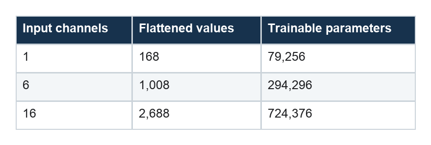

MLP Forecasting: A Nonlinear Map from Past Window to Future Path
How a multilayer perceptron models time without recurrence, convolution, or attention
Series: Sequence Models for Prediction, Part 4 of 16
The multilayer perceptron asks a blunt but surprisingly powerful question:
What if we give a nonlinear function the entire historical window at once?
No hidden state moves through time. No filter slides across hours. No attention head searches the past. The sequence is flattened into one long vector, and dense layers learn a direct mapping to the next 24 values.
This sacrifices elegant temporal structure in exchange for global access and flexible interactions.
From a window to a vector
For one input channel, the 168-step history becomes a vector of length 168. With 16 channels, it becomes a vector of length 2,688.
A compact forecasting network might be:
168 × F inputs
↓
256 hidden units + ReLU + dropout
↓
128 hidden units + ReLU + dropout
↓
24 forecast values
In compact PyTorch:
self.net = nn.Sequential(
nn.Flatten(),
nn.Linear(168 * n_features, 256),
nn.ReLU(),
nn.Dropout(0.10),
nn.Linear(256, 128),
nn.ReLU(),
nn.Dropout(0.10),
nn.Linear(128, 24),
)
The first hidden layer can combine any historical positions. A unit might activate when demand was high this morning, low overnight, and more volatile than usual during the prior day. The second layer can combine those learned conditions into a forecast trajectory.
Intuition: templates for regimes
A linear model uses one fixed weighted relationship. ReLU layers divide the input space into many regions, allowing different effective linear rules in different regimes.
Imagine three recurring household patterns:
- an ordinary weekday;
- a quiet weekend;
- an unusually volatile day.
Different hidden units can respond to each pattern. The output layer then blends their contributions for every future horizon.
That does not mean the network discovers named regimes. It means its piecewise-linear mapping can behave as if different rules apply to different parts of the input space.
What the MLP does not know
Flattening erases architectural knowledge of adjacency.
The model receives separate coordinates for “three hours ago” and “four hours ago,” but nothing in the dense layer says those positions are neighbors. If the same short pattern shifts by one hour, the MLP must learn another set of weights.
This contrasts with a convolution, which applies the same local detector across the window, and with recurrence, which reuses the same transition at every time step.
The MLP can still learn temporal patterns. It simply receives no built-in incentive to learn them efficiently.
Input width becomes model width
Parameter count changes dramatically as channels are added:

Most of the growth occurs in the first dense layer. The richer representation creates a model with more than nine times as many parameters as the demand-only version.
This matters whenever versions of a model have different input widths. A parameter-matched design could insert a shared per-timestep projection before flattening or reduce hidden width as the channel count grows.
How the MLP learns
Training repeatedly compares the 24 predicted values with the 24 targets, differentiates the loss, and adjusts every dense-layer weight through backpropagation.
ReLU is responsible for the nonlinear behavior. Without an activation between dense layers, the entire stack would collapse into one linear transformation, regardless of its depth.
Dropout randomly suppresses hidden activations during training. This discourages the network from relying on one fragile combination of inputs. Weight decay penalizes large parameters, and early stopping limits how long the network can fit the training set after validation performance stops improving.
Input scaling is especially important. A large-magnitude feature can dominate early gradients even when it contains little useful information.
Why direct multi-horizon output fits an MLP
The network produces all 24 future hours together. Each output has its own final-layer weights but shares the hidden representation.
This lets the model learn relationships across horizons indirectly. A hidden unit associated with “weekday morning ramp” can influence several future hours with different strengths.
The alternative would train 24 separate networks or recursively feed one prediction back at a time. Shared direct output is simpler and avoids error accumulation.
It does not explicitly enforce a smooth forecast path. If that matters, the loss can include a penalty on unrealistic hour-to-hour changes, or the output can be parameterized as a level plus cumulative increments.
Complete PyTorch implementation
The complete model below matches the experiment: two nonlinear hidden layers, dropout after each, and one direct output for every forecast horizon.
import torch
from torch import nn
class MLPForecaster(nn.Module):
def __init__(
self,
lookback,
n_features,
horizon,
hidden=256,
dropout=0.10,
):
super().__init__()
self.net = nn.Sequential(
nn.Flatten(),
nn.Linear(
lookback * n_features,
hidden,
),
nn.ReLU(),
nn.Dropout(dropout),
nn.Linear(hidden, 128),
nn.ReLU(),
nn.Dropout(dropout),
nn.Linear(128, horizon),
)
def forward(self, x):
# x: [batch, lookback, features]
return self.net(x)
LOOKBACK = 168
N_FEATURES = 1
HORIZON = 24
model = MLPForecaster(
lookback=LOOKBACK,
n_features=N_FEATURES,
horizon=HORIZON,
)
x = torch.randn(32, LOOKBACK, N_FEATURES)
y_hat = model(x)
assert y_hat.shape == (32, HORIZON)
The same verified implementation is available in the companion model module. The complete Dataset, DataLoader, and fit/evaluate workflow is explained in the shared PyTorch training companion.
Common failure modes
The MLP’s capacity makes memorization easy. Overlapping windows create many training examples that look different in a table but share most of their raw observations. A random split can then produce spectacularly misleading validation results.
Dense models also tie every learned weight to an exact input position. If a recurring pattern shifts by one step, the network has no built-in translation invariance.
Watch for a widening gap between training and validation loss, sensitivity to window length, unstable results across seeds, and large parameter jumps when features are added.
When an MLP is the right choice
An MLP is attractive when:
- the input window has fixed length;
- any historical position may interact with any other;
- training speed and implementation simplicity matter;
- the dataset is large enough for dense parameters;
- you want a strong nonlinear baseline before specialized sequence machinery.
It is less attractive when local patterns should be reusable across time, context length is very large, or parameter efficiency matters.
Part 5 introduces an architecture that processes the window in order and carries a learned state forward: the LSTM.
Series navigation: Series index · Previous: Linear forecasting · Next: LSTM forecasting